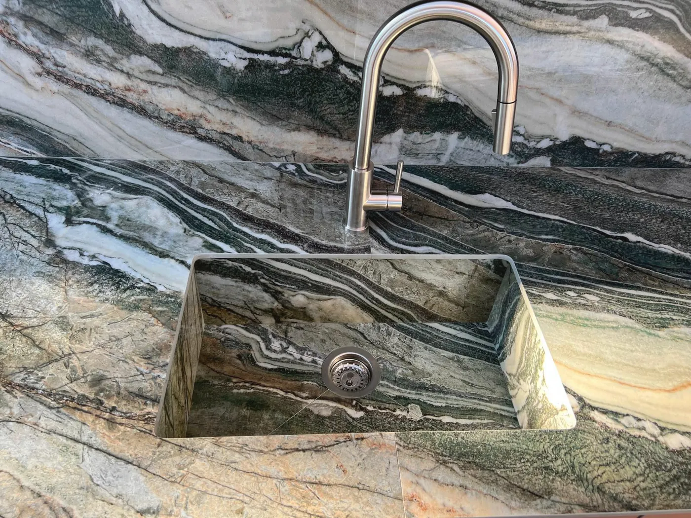
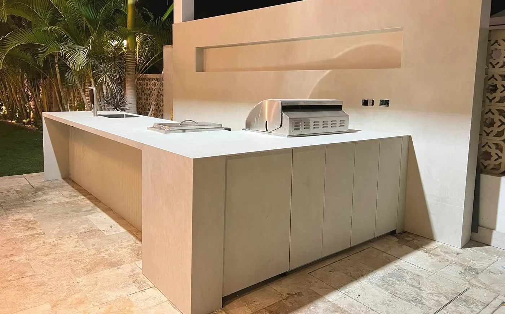

01התכנון
הכל מתחיל ליד שולחן אחד. אתה מספר למעצב איך נראה אצלך יום שישי, כמה אנשים מגיעים בחג ולאיזה צד שוקעת השמש, והוא משרטט. איפה יעמוד הגריל, איפה הטאבון, ואיפה יישבו כולם. אתה יוצא מהפגישה עם תוכנית ביד, וכבר רואה את הערב הראשון.
הכי נכון להתחיל כשהבית עוד בבנייה. החצר פתוחה, וכל אפשרות עוד על השולחן.
02הייצור
אחרי מדידה בשטח ואישור סופי, התוכנית יורדת לייצור במפעל שלנו. הארון, החזית והשיש נבנים אצלנו, לפי המידות של החצר שלך.
03ההתקנה
צוות ההתקנה שלנו מגיע ומרכיב את המטבח במקום, חלק אחרי חלק. כשהם מסיימים, נשאר רק להדליק את האש.

